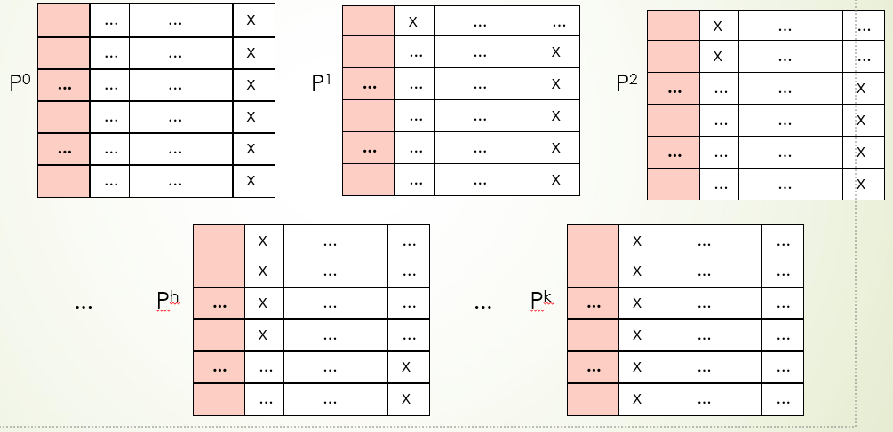
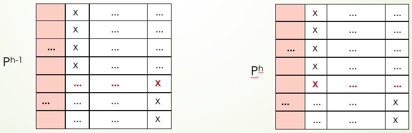
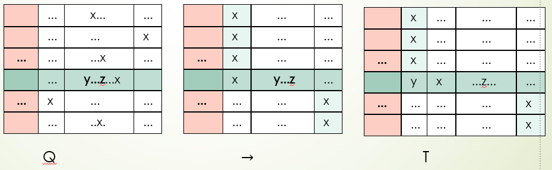
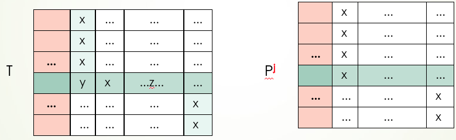
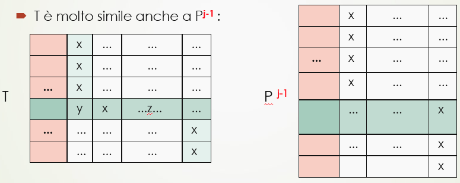
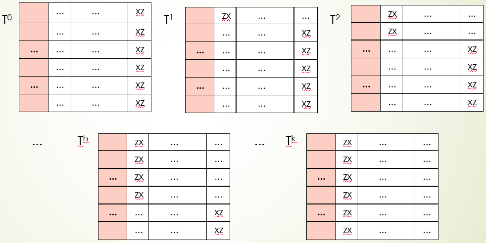
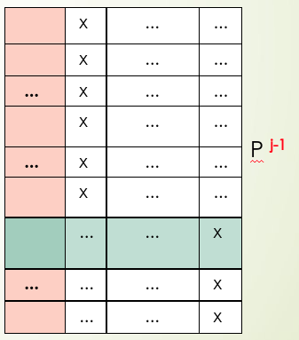

AR - Lesson 15
Indice
Dimostrazione Teorema di Arrow
Riassumendo, il teorema di Arrow ci diceva che per ogni insieme \(\left[ k \right]\) di votanti esiste un \(j \in \left[ k \right]\) tale che indipendentemente dalle \(n > 2\) alternative avremo che
l'unico sistema di voto che rispetta U e IIA condurrà ad un voto collettivo \(r\) esattamente uguale al voto individuale \(r_j\).
In altri termini, l'unico sistema di voto che rispetta sia U che IIA è la "dittatura".
Nella lezione precedente è stata dimostrata la prima delle tre parti della dimostrazione del teorema.
In questa prima fase è stato dimostrato che se un'alternatica \(x\) è polarizzante per un profilo \(P = \langle r_1, ..., r_k \rangle\) allora o \(\rho(x) = 0\) oppure \(rho(x) = n-1\)
(ovvero o \(x\) si trova all'ultimo posto nel voto collettivo \(r\), oppure all'utlimo).
Parte 2 dimostrazione
Definiamo una successione di \(k+1\) profili \(P^{(0)}, P^{(1)}, P^{(k)} \in \Pi(\left[ n \right])^k\), dove in ciascuno dei quali una stessa alternativa \(x \in \left[ n \right]\) è polarizzante. Tramite essi individueremo un dittatore potenziale.

Consideriamo tali profili ordinati in modo tale che nel profilo \(P^{(h)} = \langle r^h_1, ..., r^h_k \rangle\) l'alternativa \(x\) è al primo posto nei primi \(h\) ranking, ed ultima nei restainti (come in figura). Più precisamente \[ \rho^{(h)}_i(x) = \begin{cases} n-1 &\forall i \leq h\\ 0 &\forall i > h \end{cases} \]
È facile osservare che i due profili \(P^{(h-1)}\) e \(P^{(h)}\) differiscono l'uno dall'altro solo per il modo in cui l'\(h\)-esimo votante giudica l'alternativa \(x\):
- nel profilo \(P^{(h-1)}\) il votante \(h\) giudica \(x\) ultimo, ovvero \(\rho^{(h-1)}_h(x) = 0\)
- nel profilo \(P^{(h)}\) il votante \(h\) giudica \(x\) primo, ovvero \(\rho^{(h)}_h(x) = n-1\)

Dato che nel primo profilo tutti i votanti hanno \(x\) in ultima posizione, mentre nell'ultimo profilo hanno tutti \(x\) in prima posizione, avremo per principio di unanimità U che
\[
\rho^{(0)}(x) = 0\\
\rho^{(k)}(x) = n-1
\]
Dato che dal profilo 0 al profilo \(k\) l'alternativa \(x\) passa da essere all'utlimo posto fino al primo, esisterà certamente un primo profilo \(j \in \left[ k \right]\) per il quale \(x\) non è più all'ultimo posto.
Ovvero, per ogni \(h < j\) avremo che \(\rho^{(h)}(x) = 0\) mentre nel profilo \(j\) avremo \(\rho^{(j)}(x) > 0\).
Inoltre, per quanto visto nella prima parte della dimostrazione, dato che \(x\) è polarizzante per \(P^{(j)}\) avremo che o \(\rho^{(j)}(x) = 0\) o \(\rho^{(j)}(x) = n-1\).
Però visto che abbiamo definito \(j\) in modo tale che \(\rho^{(j)}(x) > 0\) allora necessariamente avremo che \(\rho^{(j)}(x) = n-1\).
Notiamo che il votante \(j\) ha un ruolo decisivo nel posizionare \(x\) nella graduatoria finale del profilo \(P^{(j)}\), perché lo fa passare da essere all'ultimo posto al primo. Perciò possiamo dire che il votante \(j\) è il dittatore potenziale.
Parte 3 dimostrazione
In questa ulitma parte dimostreremo che il dittatore potenziale \(j\) trovato nella seconda parte è effettivamente il dittatore del sistema di voto affidabile che rispetta U e IIA.
Il il profilo \(Q = \langle r^Q_1, ..., r^Q_k \rangle \) con \(k\) votanti su \(n\) alternative.
Come prima, per ogni votante \(h \in \left[ k \right]\) indichiamo con \(\rho^Q_h\) la funzione peso associata al ranking \(r^Q_h\) del votante \(h\).
Infine indichiamo che \(r^Q\) il voto collettivo finale (che soddisfa \(\sigma\) e con \(\rho^Q\) la funzione di peso collettiva associata a \(r^Q\).
Vogliamo dismotrare che qualunque sia \(Q\) allora \(r^Q = r^Q_j\). Più precisamente, qualunque sia \(Q\), comunque si scelgano due alternative \(y,z \in \left[ n \right]\) allora \[ \rho^Q(y) > \rho^Q(z) \iff \rho^Q_j(y) > \rho^Q_j(z) \]
Tale affermazione verrà dimostrata in due sottofasi:
- dimostriamo che se \(y \neq x\) e \(z \neq x\) allora \(\rho^Q(y) > \rho^Q(z) \iff \rho^Q_j(y) > \rho^Q_j(z)\).
- dimostriamo che se \(y \neq x\) allora \(\rho^Q(y) > \rho^Q(x) \iff \rho^Q_j(y) > \rho^Q_j(x)\).
Sottofase 3.1
Supponiamo di avere che \(y \neq x\) e \(z \neq x\), e senza perdita di generalità supponiamo che \(\rho^Q_j(y) > \rho^Q_j(z)\).
A questo punto costruiamo a partire da \(Q\) un nuovo profilo \(T = \langle r^T_1, ..., r^T_k \rangle\) nella seguente maniera:
- Per ogni votante \(h \leq j\) poniamo \(x\) in testa alla graduatoria.
- Per ogni votante \(h > j\) poniamo \(x\) in ultima posizione della graduatoria.
- Infine, considerando solamente il votante \(j\), poniamo l'aternativa \(y\) in testa la ranking \(r^T_j\).

Figura 3: Transformazione dal profilo \(Q\) al profilo \(T\).
Osserviamo che il profilo appena costruito \(T\) è molto simile al profilo \(P^{(j)}\) trovato nella fase 2.

Dalle parti 1 e 2 della dimostrazione sappiamo che \(\rho^{(j)}(x) = n-1\), perciò è vero che \(\rho^{(j)}(x) > \rho^{(j)}(z)\).
Inoltre poiché l'oride relativo tra \(x\) e \(z\) rimane invariato sia in \(P^{(j)}\) sia in \(T\), allora per il principio dell'indipendenza dalle alternative irrilevanti IIA avremo che \(\rho^{T}(x) > \rho^{T}(z)\).
Analogamente possiamo osservare che \(T\) è molto simile anche al profilo \(P^{(j-1)}\).

Come prima, dalla parte 2 della dimostrazione abbiamo trovato un \(j\) in modo tale che \(\rho^{(j-1)}(x) = 0\), perciò avremo che \(\rho^{(j-1)}(x) < \rho^{(j-1)}(y)\).
Inoltre poiché l'oride relativo tra \(x\) e \(y\) rimane invariato sia in \(P^{(j-1)}\) sia in \(T\), allora per il principio dell'indipendenza dalle alternative irrilevanti IIA avremo che \(\rho^{T}(x) < \rho^{T}(y)\).
Osserviamo ora la figura 3.
L'ordine relativo tra \(y\) e \(z\) rimane invariato sia in \(Q\) che in \(T\), perciò ancora una volta per il principio IIA avremo che \(\rho^Q(y) > \rho^Q(z)\).
Ricapitolando, siamo partiti dall'assunzione che \(\rho^Q_j(y) > \rho^Q_j(z)\), e costruendo il profilo \(T\) abbiamo dimostrato che tale assunzione implica che \(\rho^Q(y) > \rho^Q(z)\). Ovvero abbiamo mostrato che
\begin{equation} \rho^Q_j(y) > \rho^Q_j(z) \implies \rho^Q(y) > \rho^Q(z) \end{equation}Dato che \(y\) e \(z\) sono variabili mute (ovvero interscambiabili), possiamo dimostrare alla stessa meniera che
\begin{equation} \rho^Q_j(y) < \rho^Q_j(z) \implies \rho^Q(y) < \rho^Q(z) \end{equation}Le due euqaioni (1) e (2) implicano l'ipotesi della sottofase, ovvero \[ \left[ (1) \land (2) \right] \implies \left[ (y \neq x \land z \neq x) \implies (\rho^Q(y) > \rho^Q(z) \iff \rho^Q_j(y) > \rho^Q_j(z)) \right] \]
Sottofase 3.2
In questa sottofase si vuole dimostrare che se \(y \neq x\) allora \(\rho^Q(y) > \rho^Q(x) \iff \rho^Q_j(y) > \rho^Q_j(x)\).
Iniziamo con l'osserva che dato che ci sono più di due alternative, ovvero \(n > 2\), allora certamente esisterà un'altra alternativa \(z \neq y\) e \(z \neq x\).
Deriviamo ora dai profili \(P^{(0)}, P^{(1)}, ..., P^{(k)}\) una nuova sequenza di profili \(T^{(0)}, T^{(1)}, ..., T^{(k)}\) spostando la posizione di \(z\):
- \(T^{(0)}\) è ottenuta da \(P^{(0)}\) semplicemente spostando \(z\) in ultima posizione per tutti i ranking \(r^{(0)}_1, ..., r^{(0)}_k\).
- Per \(h > 0\), \(T^{(h)}\) è ottenuta da \(P^{(h)}\) spostando \(z\) in prima posizione per tutti i ranking \(i \leq h\), e in ultima per tutti gli altri, ovvero \[ \rho^{T^{(h)}}_i(x) = \begin{cases} n-1 &\forall i \leq h\\ 0 &\forall i > h \end{cases} \]

Figura 6: Sequenza di profili \(T^{(0)}, T^{(1)}, ..., T^{(k)}\).
Per comodità, per ogni \(h \in \lbrace 0 \rbrace \cup \left[ k \right]\) indichiamo con \(t^h\) il ranking collettivo del profilo \(T^{(h)}\), e con \(\rho^{T^{(h)}}\) la funzione di pesso ad esso associata.
Esattamente come per i profili \(P^{(0)}, P^{(1)}, ..., P^{(k)}\) (vedi punto 2), esiste un \(\ell \in \left[ k \right]\) tale che \(\rho^{T^{(h)}}(z) = 0\) per ogni \(h < \ell\), mentre \(\rho^{T^{(\ell)}}(z) = n-1\).
Ancora una volta, esattamente come dimostrato nel punto 3.1, per ogni profilo \(Q\), dato che \(y \neq z\) e dato che \(x \neq z\) allora
\[
\rho^Q(y) > \rho^Q(x) \iff \rho^Q_{\ell}(y) > \rho^Q_{\ell}(x)
\]
Per concludere la dimostrazione basta dimostrare che \(\ell = j\).
- Caso \(\ell < j\)
Dimostriamo che esiste almeno un profilo \(P\) tale che \(\rho^P \neq \rho^{P}_{\ell}\). Ricordiamo che nel punto 2 abbiamo scelto \(j\) in modo tale che \(\rho^{(j-1)}(x) = 0\), ovver che \[ \rho^{(j-1)}(x) < \rho^{(j-1)}(y) \] Ma per come è definita la sequenza \(P^{(0)}, P^{(1)}, ..., P^{(k)}\) sappiamo che per ogni profilo \(h\) e per ogni \(i \leq h\) abbiamo che \(\rho^{h}_i(x) = n-1\), perciò avremo che \(\rho^{(j-1)}_{\ell}(x) = n-1\) dato che \(\ell < j \implies \ell \leq j-1\).
Perciò avremo che nel ranking \(\ell\) del profilo profilo \(P^{(j-1)}\) che \[ \rho^{(j-1)}_{\ell}(x) > \rho^{(j-1)}_{\ell}(y) \] Quindi certamente \(\rho^{(j-1)} \neq \rho^{(j-1)}_{\ell}\).

Questo stesso ragionamento si può applicare per ogni profilo minore di \(j\), perciò per forza non può essere vero che \(\ell < j\).
- Caso \(\ell > j\)
- Per come abbiamo scelto \(j\) sappiamo che \(\rho^{(j)}(x) = n-1\) e che quindi \[ \rho^{(j)}(x) > \rho^{(j)}(y) \] Però per come abbiamo definito la sequenza di profili \(P^{(0)}, P^{(1)}, ..., P^{(k)}\), sappiamo che per ogni \(i > h\) abbiamo che \(\rho^{h}_i(x) = 0\). Perciò dato che \(\ell > j\) allora \[ \rho^{(j)}_{\ell}(x) < \rho^{(j)}_{\ell}(y) \] quindi non può essere vero che \(\ell > j\).
In conclusione, se non è vero che \(\ell < j\) e non è vero che \(\ell > j\) deve necessariamente essere vero che \(\ell = j\) \(\square\).